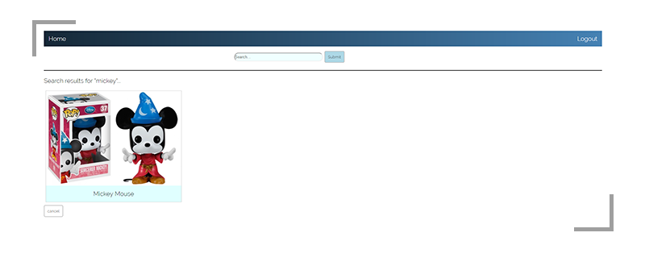

Used : HTML / CSS / JS / Firebase
Nowadays Funko pop is very popular and many people are collecting Funko pop characters. Funko pop has various characters from animations, dramas, movies, and games. There are many Funko pop fans around the world, so our website focuses on this phenomenon where fans are interested in the figurines’ aesthetic and considerably cheap prices. Due to this phenomenon, people have collected a large amount of Funko pop characters and at times it is difficult to remember if they have a certain character or not. That is where our project comes in, it acts as a collection website of Funko pop characters where users can add figurines to their online collection. If not, users can put a Funko what they want in their wishlist. From the collection and wishlist users can have a seamless overview and management of their collection whether if they’re just collecting a few or if they have to manage a warehouse full of Funkos. The web application does not require an account to browse the availability of Funkos in the database, but with an account users can manage their collection.
Motivation & Features
Motivation:
It is difficult to manage a collection in real life due to the limitations of physical space and quantity. Overtime one might misplace or forget about a figurine that they bought and an online collection will aid users in keeping track of their figurines.
Users also want to manage and maintain a list of the characters that they want.
Users need a place to browse through to check for new or interesting characters.
Users want to read up on the background characters of the figurines that they are adding to their collection or wishlist.
Features:
Manage collection and wishlist
Browse and search through a database of Funko pop characters
Add missing Funko pop characters that are not in the database
Quantify the amount of a figurine that a user has when adding to their collection
Add characters to a collection or wishlist
Read up on a character’s background
Quickly find out if a figurine is still available for sale or if it has been vaulted
Details
Authentication:
We are using regular e-mail address and Google authentication as forms of authentication. The programming process of the getting the authentication to work was simple. However, in attempts in trying to be more user friendly, it was actually quite difficult to figure out the errors and determine what kind of display messages should be shown to the user. We decided to go for the classic red highlighted box with a small red error message beneath the form because we felt that an alert would be too intrusive and ruin the user experience.
We implemented CRUD functionalities:
Create
For the create functionality, we are creating a character and setting its information by clicking the “Add missing Funko” button at the bottom of the page which opens a module and asks the user to fill in a form for the Funko character’s data. A character’s data consists of four elements (Name, Franchise, Image URL, Information). At this time, we are using image addresses instead of uploading image files. We decided to depart a little from our wireframe and use a module instead of a separate page because we felt that it would be more practical for a user to be able to fill out a form while on the index (home) page and see the page get updated before one’s eyes instead of being redirected to a form page only to be redirected back to the index page.
 Read
Read
For the read functionality, in the home page(index.html), the page reads all of the characters’ informational data from the DB and displays a preview image of the character. When a user clicks on the image, the user will be redirected to the character page which will display the data that was collected from the “Add missing Funko” module.
The read functionality is also in the profile page(profile.html). In this case, the page reads information about the current user that was set during the signup process. A problem that we ran into with this is with the google authentication. When a user logs into the site with their google account, we found that it completely bypasses our signup form and breaks our profile page. The profile page got broken because it relied on getting the user’s data which is set in the signup forms. So in order to counter the google authentication profile errors we set all of the new google user’s data, except for email, as dummy data. This allowed google users to view their profile page.
Update
For the update functionality, in the character page, users are restricted to only being able to update the character information and will be able to see their changes after updating.
While in the profile page, users are allowed to update their personal information (profile image with an image url, name with a string, and collection for character with an integer). We found that by implementing the update function in profile, it allowed us to somewhat counter the google profile problem. New google users are prompted by an alert to fill in their name which will complete their profile page. By doing this, it allowed us to fill in the empty form fields that the google authentication skipped from the signup page.

Delete
For the delete functionality, in the character page, users can delete a character by clicking “Delete this character”. This will delete the character information in DB, so the information will never be able to be read anymore. After deletion, page redirects to main page. The tricky part about this, as with the update and read was figuring out how to retrieve the unique keys that are associated to the funko characters and user data.
We are using vanilla-Javascript to implement the authentication and CRUD functionalities because it is more readable and easier to understand at this time. We found that sticking to using just vanilla-Javascript helped us realize how similar it is and how essential it is to know code proper html. They are very similar in the sense of structure when updating information. This was useful to know when we decided to implement dynamically changing navbars that depended on whether the user was an authenticated user or not onto all of the pages to make the website more cohesive.
Challenges
Data hierarchy in Firebase
Even though there are a lot of tutorials out there it was still a little difficult to figure out the data hierarchy in firebase. (For example. ref(cse134bfunko DB) > key > child(each element)), so accessing data that we want was little challenge for us. On top of this, passing data around was a challenge and so to tackle this problem we decided on passing the key around in the query string. Defining the data hierarchy is important at this stage as we scale going into next week, the problems should not require us to restructure our architecture. By having the hierarchy set like this, we can quickly grab the keys when calling funkos to display them on the home/search and set up the query string from there. By having it in the query string, once the user is in the character page we are able to grab the key and then request the appropriate one in funkos/KEY, as well as deleting.
Too many APIs
This relates to the data hierarchy issue, because of the vast amounts of tutorials and references it was difficult to ascertain which method we should use for our prototype. There are many ways(APIs, References) that showed how to implement it, but within each of those resources they all had a different approach handle which confused us. In the end, we decided to stick with vanilla-javascript because it was the most similar to html that we used to format our page.
Data storage
A current problem that we have is data storage. We have tried to find a way to have users upload images to our database and use those, but we were unable to get that to work. We initially tried having a file input type but that gave us something that we were not expecting and did not play well with firebase. All the tutorials we looked at used it in tandem with angular, which was something that we were trying to avoid. So we decided to store image addresses from the web into our DB. However, the problem with this is that users are able to insert image resources that are not valid (such as broken links).
Vanilla CSS vs. Bootstrap
In terms of learning, CSS was more daunting to learn than Bootstrap. This is because CSS has more properties that can be combined in many different ways to make an entirely different web-viewing experience. There is also a vast contrast between CSS and Bootstrap because bootstrap has already done the hard work of grouping CSS properties together and have placed them in classes. By placing the CSS properties in predefined classes, Bootstrap gives users an easy to learn and use experience. Overall it took around two times longer to learn CSS than it did Bootstrap and this is because of the predefined classes.
However, the downfall of the predefined classes is that Bootstrap feels kind of limiting. It feels limiting because Bootstrap does not include all aspects of CSS. An example of this is creating a hover property on each cell of a table. Bootstrap does not seem to include this option because it decided that hover properties should only be applied to an entire row of the table instead of each cell. This makes the programmer’s style have to adhere to bootstrap’s design standards, such as buttons classes and their predefined grid, which limits some degree of freedom depending on what the documentation allows us to change. Another point that made Bootstrap a little difficult to use is when the programmer wants to edit the Bootstrap CSS file. The Bootstrap CSS file is compressed into one very long line which makes it difficult to edit and figure out what each class is doing. This instead forces the programmer to look at the reference/tutorial site to find out what each class does.
CSS and Bootstrap each have their own good qualities of when to employ each approach. Since Bootstrap is easier to use from the start, it will be great to use in situations when the programmer wants to quickly make a nice-looking site without having to put in the effort of learning and grouping all of the CSS properties. However, the downside of this is that the users of the website will experience longer rendering times. Bootstrap pages have a relatively longer to rendering time than normal CSS pages and that is most likely due to having to render less classes and CSS properties.
CSS is harder to learn and get into because of all of the different ways that the CSS properties can be combined. But since the programmer has the ability to group the properties in any way that the programmer wants, the programmer is given more control. In addition to the control of how the site looks, the users of the website also gain the benefit of shorter rendering times than Bootstrap pages.
In the end, it depends on what the programmer decides on what is more important: saving the programmer’s time from learning CSS or faster rendering times for the user of the website.